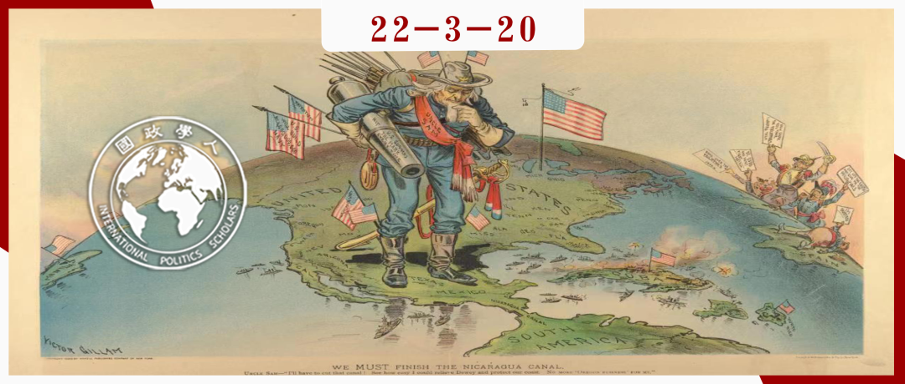

收录于合集

**
**
美国霸权的兴衰：从威尔逊到特朗普
作者： Joseph S. Nye Jr. （约瑟夫·奈），哈佛大学杰出服务教授、哈佛大学肯尼迪政府学院前名誉院长，曾担任美国助理国防部长、国家情报委员会主席以及副国务卿。他的最新著作包括《总统领导力与美国时代的建立》（Presidential Leadership and the Creation of the American Era），《美国世纪结束了吗？》（Is the American Century Over?）《道德重要吗？》（Do Morals Matter?）《总统和外交政策——从罗斯福到特朗普》（Presidents and Foreign Policy from FDR to Trump）。他是美国艺术与科学学院、英国学院和美国外交学院院士。在最近一次关于国际关系学者的调查中，他被评为美国外交政策方面最具影响力的学者，并在2011年被《外交政策》杂志评为百位全球思想家之一。
编译： 姚博闻（新加坡国立大学公共政策系）
来源： Nye Jr, J. S. (2019). The rise and fall of American hegemony from Wilson to Trump. International Affairs , 95(1), 63-80.

导读
本文前半部分溯源了美国外交政策中自由主义倾向的来源及早期实践。威尔逊是美国自由主义外交早期的代表人物，其在一战后的民族自决、创建国际联盟等主张为美国自由主义外交奠定了基础。然而，威尔逊的政策在当时被认为过于激进，未被广泛接收，直到二战后才被其后继者发扬。本文的后半部分则着眼于2016年当选的美国总统特朗普。作者认为，特朗普的当选意味着美国在二战后建立的“自由主义国际秩序”已然走到尽头，该秩序带来的国力透支和国内不平等加剧是造成这一结果的主要原因。作者建议，美国应学会与其他国家共享权力，致力于共同创造一个开放和基于规则的新秩序。
本文从历史的深度探讨了美国自由主义外交政策的兴衰，对于了解、分析美国外交决策有着极大的参考价值。本文也提醒我们，外交始终与国内政治、经济、社会发展紧密相关，外交政策无法脱离国内形势而制定。如今，面临世界百年未有之变局，我们应当稳步实现国内改革发展的一系列目标，做好自己的事，使国内形势成为我们参与国际事务的坚实基础。
摘要
一个世纪前，伍德罗·威尔逊派遣了200万人去欧洲打仗，从此改变了美国在世界上的地位。但美国在20世纪30年代退回到了孤立主义。第二次世界大战后，哈里·杜鲁门等人创建了一个由永久联盟和多边机构组成的框架，这就是众所周知的“自由国际秩序”或“美国治下的和平”。当今，用这些术语来描述美国在世界上的地位已经过时，但最大国家提供公共产品的需求仍然存在。开放的国际秩序包括政治军事事务、经济关系、生态关系和人权。这些因素在多大程度上相互依赖，以及1945年的一揽子方案开始动摇后哪些因素会保留下来仍有待观察。威尔逊遗留下来的建立国际机构的经验仍然有意义。领导与统治不同，它需要共享。在1945年后的70年里，美国的领导力和影响力几经沉浮。现在，随着自身优势减弱以及世界正变得更加复杂，美国在经济和军事实力方面的例外主义应该专注于分享全球公共产品的供应，特别是那些需要与其他国家分享权力的产品。威尔逊百年前有关国际机构和基于规则的秩序的见解仍至关重要，但美国在世界上的地位可能受到来自其国内民粹主义政治崛起，而非其他大国崛起的威胁。
编译
01
引言
美国人常认为他们在世界上的地位 “独一无二”。美国例外论（American exceptionalism）有各种各样的来源，其中之一是其国父们的自由启蒙思想，而同样重要的是圣经中关于作为“天选之人（chosen people）”的宗教根源，以及那些为了在新世界以更纯洁的方式信仰上帝而逃离英国的清教徒的罪恶感。如此高的抱负导致人们担心自己是否达到了这些不可能达到的标准或者道德衰落。
美国受两大洋保护，并且相邻的国家都较弱，因此19世纪美国主要致力于向西扩张，并力求避免卷入以欧洲为中心的全球力量平衡。到20世纪初，美国已经成为世界上最大的经济体，它对第一次世界大战的干预打破了权力平衡。然而，到20世纪30年代，美国重新变得内向，陷入了极端的孤立主义。二战期间，富兰克林·罗斯福（Franklin Roosevelt）、哈里·杜鲁门（Harry Truman）、德怀特·艾森豪威尔（Dwight Eisenhower）等领导人得出了这样的教训：美国不能再次闭关自守。而此后形成的安全同盟、多边机构和相对开放的经济政策体系被称为美国国际秩序或“自由主义国际秩序（liberal international order）”，它定义了70年来美国在世界上的地位。如今，随着中国在国际舞台上的崛起以及民主国家内新一波民粹主义政治的兴起，这一体系正受到质疑。
02
二十世纪的现实主义和自由主义
在19世纪，实力较弱的美国可以对其周边更弱小的国家采取帝国主义政策，但不得不对欧洲的全球力量平衡维持谨慎的现实主义。门罗主义主张将西半球从欧洲的平衡中分离出来，尽管美国能够坚持这一主张只是因为英国有意将欧洲的对手们排除在西半球之外，而英国皇家海军掌控着海洋。
然而，到了20世纪初，随着美国实力的增强，它在全球的选择也随之增加。二十世纪早期美国权力扩张的代表人物是泰迪·罗斯福（Teddy Roosevelt）和伍德罗·威尔逊（Woodrow Wilson），两人在国内政治上都是进步派，但在党派、性格和对世界政治的看法上都截然不同。两人都是道德主义者，都相信美国肩负着特殊使命，但他们分别代表了美国例外论的两个方面，以及现实主义和自由主义的道德传统。
泰迪·罗斯福相信盎格鲁-撒克逊人，尤其是美国，拥有文明使命。 罗斯福一个权力平衡的现实主义者，相信武力，但同时他也相信美国可以通过将权力与崇高的目标相结合来为人类服务，并为伍德罗·威尔逊不切实际的理想主义感到恼怒。 罗斯福因调解日俄战争而扩大了美国的实力被人们铭记。他启动了巴拿马运河，在门罗主义（Monroe Doctrine）的基础上建立起罗斯福推论，并将美国海军扩大为一个航行于世界各地的大白舰队。但罗斯福在道德上远非完美。即使考虑到种族主义是当时普遍存在的，他也未能达到一些道德标准，如美国军队在菲律宾为镇压起义而杀害、折磨了大量囚犯。
像二十世纪早期的大多数美国领导人一样，威尔逊也认为自己是一个理想主义者。但他“更多地从文学中获得的对人性的长远看法”，而非像罗斯福那样从边疆的动荡或美西战争中获得灵感。威尔逊不支持普世人权，毫不犹豫地干预墨西哥和加勒比地区以“推行”民主， 但他对国际体系的看法基本上是由自由主义塑造的 。威尔逊民族自决的观点关注的是欧洲的民族国家，而非欧洲或美国的殖民地，尽管如此，他的言论还是对殖民地人民产生了极大的影响。他没有创造“自决”一词，但他在没有充分理解其含义的情况下采纳了它。威尔逊理解权力平衡，但他认为这种平衡是不道德的。威尔逊认为，建立在反对侵略者的集体安全条约基础上的国家联盟，将比为平衡实力而建立的联盟更和平、公正。
威尔逊和罗斯福最终都赞成对第一次世界大战的干预，但原因不同：罗斯福支持加入英国一方以实现权力平衡，而威尔逊则追求不通过战胜敌人而实现和平（peace without victory），不相信武力带来的物质利益，认为美国的任务是领导所有国家加入一个新的国际组织以妥善结束这场战争。威尔逊认为，只有这样的和平才能在短期内为美国人民所接受，以及在长期内为世界的道德舆论所接受。
1916年11月，德国恢复了无限制潜艇战，并试图在墨西哥挑起事端。威尔逊仔细斟酌了三种选择：继续保持中立、武装中立以保护海上船只以及全面介入战争。威尔逊选择了最大胆的路线，但却用美国的道德主义来包装他的选择。 他阐述了自己新的原则，包括建立一个国际联盟以在世界政治中建立一个更加道德的秩序。
然而，威尔逊并未改变其他国家领导人的态度。在凡尔赛，克莱蒙梭、劳合·乔治和奥兰多的民族主义被证明更为有效，威尔逊在他的“十四点”原则中做出了许多妥协，以在成立国际联盟（League of Nations）的公约上达成共识。根据该公约，各国承诺相互结盟以对抗侵略者，而非平衡其他国家。然而在美国国内，参议院最终否决了这一条约。威尔逊在凡尔赛做出的一系列妥协也削弱了民族自决的成果，并埋下了定时炸弹，如波兰但泽走廊和捷克斯洛伐克的德意志少数民族等问题——并最终被希特勒于1938和1939年引爆。至此，威尔逊把世界改造得“对民主而言安全（safe for democracy）”的目标显然已经失败。
此外，威尔逊利用美国例外论来赢得美国公众舆论的努力也失败了。20世纪30年代，美国公众对威尔逊将美国带入第一次世界大战的反应导致了强大的孤立主义浪潮，并使得之后富兰克林·罗斯福在面临希特勒的威胁时左右为难。过于雄心勃勃的转型目标，加上对自己鼓舞人心的力量过于自信，最终使得威尔逊的政策与有效或道德的外交背道而驰。
威尔逊道德上的成功并非在外交上，而是在思想上。几十年后，他再次象征着一种新型的国际关系。威尔逊对他的继任者产生了深远的影响，尤其是富兰克林•罗斯福和哈里•杜鲁门（Harry Truman），他们在1945年后开创了自由主义国际秩序。两人都认为自己是威尔逊主义者，而联合国则继承了威尔逊的国际联盟。
03
百年之后
在第一次世界大战结束一百周年的今天，评估美国在世界上的地位以及威尔逊的自由主义遗产是一件令人感到忧虑的事，不仅由于中国的崛起，也因为美国国内政治极化以及受其影响的美国公众舆论。2016年，一位聚焦于民族主义和保护主义并否定盟友的候选人当选总统，代表着美国的政策在70年的连续性后开始大转弯。
唐纳德•特朗普（Donald Trump）和威尔逊都信奉美国例外论，但除此之外就没什么共同点了。威尔逊是一个信奉自由主义的理想主义者，他希望创建多边机构，让世界为民主提供安全。而特朗普则是一个特立独行的现实主义者，他关注的是美国国家利益的狭隘定义，并对作为美国软实力源泉的民主不屑一顾。
从1945年到1991年，全球力量的平衡是两极的，美国和苏联两个超级大国在不结盟世界中竞争，并展开了核军备竞赛。但随着1989年柏林墙倒塌和1991年苏联解体，美国成为了世界上唯一的超级大国。理论家们将其称为单极世界，因为美国是唯一一个能够在全球范围内投射军事力量的国家。 但事实证明，单极性的概念具有欺骗性，并且助长了一种狂妄自大的情绪 ，不仅导致美国在入侵伊拉克的问题上野心过度扩张，也使得俄罗斯和中国开始在政治上对抗美国的外交。一些美国人错误地认为历史已经结束，美国式的民主是世界唯一正确的选择。
单极世界为威尔逊主义在美国外交政策中的复兴提供了契机。 冷战期间的美国秩序是一种“霸权自由主义”，但苏联解体后美国的“新威尔逊主义”则是一种帝国主义。乔治·H·W·布什是一个务实的现实主义者，但他在解释第一次海湾战争时使用了威尔逊式的集体安全和“世界新秩序”的语言。他的继任者比尔·克林顿奉行他所谓的民主“扩大和参与”政策。
乔治·W·布什最初反对克林顿的人道主义干预和国家建设，但2001年的“9·11事件”改变了公众舆论与布什的政策和言论，使其更倾向于用威尔逊式的道德主张为自己辩护。威尔逊是一个理想主义者，而布什最初是一个现实主义者，但他们都强调促进世界其他地方的民主和自由，并且两人所拥护的愿景都因为理想与国家能力之间巨大的差距而未能实现。二者都试图引导公众接受他们的变革，但都失败了，结果都出现反弹，特朗普的当选体现了这一点。
新保守主义批评人士认为，特朗普和奥巴马的战略更多的是相似之处，而非不同之处。在他们看来，尽管风格不同，但二者政策都是对国内收缩需求的错误回应。布什和奥巴马在很多方面都截然不同，但他们认为应朝着普遍的自由主义进步。相比之下，特朗普的标准是霍布斯现实主义、零和视角和狭义定义的国家利益。目前，威尔逊主义处于休眠状态，二战后美国秩序的未来也前途未卜。
04
自由主义国际秩序
“自由国际秩序”这一常被用来描述二战后美国主导时期的词语有些误导，因为这种秩序从来就不是全球性的，也不总是自由的。1945年后出现的是一个安全框架和一系列松散的多边机构。实力较弱的盟友可以在制度上使用美国的力量，美国提供公共产品，并在多边规则和机构的松散体系中运作。
这种美式秩序是威尔逊自由主义和权力平衡现实主义的结合，它有四个主要部分。 按时间顺序，经济排在第一位。布雷顿森林体系的自由经济制度于1944年制定。安全防线紧随其后，联合国是在欧洲的战争接近尾声时成立的。很明显，它是威尔逊联盟的继承者，但因罗斯福的现实主义加入了四个（后来变成五个）拥有否决权的安理会常任理事国。第三是人权和自由主义的政治价值观，这一点被纳入了《联合国宪章》以及《世界人权宣言》。最后则是对全球公域的保护，这主要指之前英国在维护公海自由方面所扮演的角色。
在这一框架内，全球经济、社会和生态的相互依赖性得到了增强。到1970年，经济全球化已恢复到1914年第一次世界大战前的水平。当前的一个重要问题是，即使美国的地位发生变化，从这种基于规则的国际秩序中受益的其他国家，如中国，是否会维护这种制度框架。这个秩序的自由主义成分可能被夸大了，但美国的联盟和多边机构体系帮助维护了世界的安全与稳定，美国公众舆论中有一个广泛的国内共识，那就是捍卫和扩展这一秩序符合国家利益，直到这一共识在2016年第一次被一个主要政党的总统候选人质疑。现在，许多观察家认为美国的这种秩序正在走向终结，与此同时，美国在世界上的地位正在发生重大变化。
05
中国会取代美国吗？
许多观察家认为，中国的崛起将标志着美国时代的终结。然而，与当前的普遍看法相反，中国并不会马上取代美国成为世界上最大的经济体，这取决于中国经济增速。而且即使中国有朝一日在经济规模上超过美国，这也不是衡量地缘政治重要性的唯一标准。权力有三个层面：强制力、报复能力和吸引力。经济实力只是地缘政治的一部分，而即使在经济实力方面，中国在人均收入方面仍将落后于美国。与此同时，在军事和软实力方面，中国远远落后于美国。
随着中国实力的增长，一些观察人士担心中国将不会为自己没有帮助建立的国际秩序做出贡献。但这夸大了“非本处发明（not invented here）”的问题。中国从1945年后的国际秩序中获益，但问题是它是否会在公共产品的生产中进行合作。总的来说，中国迄今为止的行为表明，它无意推翻自己从中受益的现行世界秩序，而是想在这一秩序中增加自己的影响力。不管怎样，随着中国实力的增强，美国的自由主义秩序将不得不改变。首先，权力必须共享，而中国对自由主义或美国的统治几乎没有兴趣。 明智的做法是摒弃“自由主义”和“美国”这两个词语，转而提及“开放的国际秩序”或“基于规则的秩序”的前景。
06
美国的地位与全球公共产品
经济和军事规模是美国例外论的另一个来源，如果美国仍然是最强大的国家，就有理由在组织全球集体产品生产方面发挥领导作用。然而，这一角色需要对国家利益的宽泛定义，而非狭隘地聚焦于是否有人搭便车（free- riding）。在军事和经济产品的某些领域，美国的领导作用发挥了很大的作用，如捍卫航行自由和为贷款人提供信心。而在新的跨国问题上，虽然美国的领导作用仍然很重要，但想获得成功就需要其他国家的合作。如果中国提高能源效率，减少二氧化碳排放，美国将从中受益。在一个日益复杂的世界里，与世界联系最紧密的国家才是最强大的国家。
美国的开放性能否在其国内政治中持续下去？即使美国继续拥有比其他任何国家都多的军事、经济和软实力资源，它可能也不会选择将这些资源转化为全球舞台上的有效权力行为。决定美国未来在世界上的地位的关键是合作的态度和与他人分享权力，而特朗普政府的头几年并不令人感到鼓舞。“美国优先（America First）”在某种程度上只是一个口号——每个国家都把自己的利益放在首位，但特朗普对此表现出了狭隘的零和解读倾向。 也许对美国未来世界地位的主要威胁不是来自外部，而是内部？
07
权力转化与来自内部的威胁
2016年总统大选中两党都呈现出了对全球化和贸易协定的民粹主义反应。“民粹主义”是一个既可以与左翼也可以与右翼意识形态联系在一起的模糊的术语，通常意味着对精英的抵制。民粹主义的根源既有经济方面的，也有文化方面的。在与外国的竞争中失去工作的选民倾向于支持特朗普。老年白人男性等群体也倾向于支持特朗普，他们在20世纪70年代的文化战争中失去了地位，这场战争涉及到与种族、性别和性取向有关的价值观的改变。 经济和文化方面的解释并不相互排斥，特朗普“明确地将这些问题联系在一起 ，声称非法移民正在夺走美国公民的工作机会”。
即使没有经济全球化，这些文化和人口结构上的变化也会产生一定程度的民粹主义。民粹主义很可能会继续下去，因机器人而减少的就业机会和因贸易减少的一样多，文化变革也会继续造成分裂。美国的政治两极分化早在特朗普之前就开始了，他的当选既是这种分化的症状，也是它的原因。支持全球化和开放经济的政策精英得到的教训是， 他们将不得不更多地关注经济不平等问题，并为那些被经济变革扰乱的人提供调整援助。
与此同时，我们不应过分地认为2016年大选是美国公众舆论的长期趋势，或者是特朗普巧妙利用社交媒体控制新闻议程的结果。尽管特朗普赢得了大选，但他没有赢得普选多数，尽管美国人担心就业问题，但“孤立主义”的标签并不能准确地描述当前美国人的态度。
一些美国人怀疑美国是否有能力维持一个开放的国际秩序。事实上，美国目前在国防和外交事务上的支出还不到冷战峰值水平的一半，结盟并不昂贵。问题不是枪支vs黄油，而是枪支vs黄油vs税收。除非通过增税的意愿来扩大预算，否则国防支出将被不得不与重要的投资领域，如国内教育、其他基础设施的维护、研发支出争夺资源。在所有主要发达国家中，美国仍是税率最低的国家之一。维持公开秩序的另一个国内挑战是干预问题。在一个跨国恐怖主义的时代，某种程度的干预是不可避免的。但在一个民族主义和社会动员的时代，外国占领必然会产生怨恨。对于支持一个开放的国际秩序所需的国内共识而言，过度承诺比收缩造成的损害还要多。
政治两极化很可能继续下去，在外交政策问题上使用煽动性策略的趋势削弱了美国为应对新的跨国环境而加强机构、建立关系网络和制定政策的能力。 在这些影响权力转化能力的社会趋势之外，美国在当今世界的地位也因特朗普总统的独特个性而变得更加不确定。某些领导人经历了政治过程的筛选，往往更容易被预测。而未经筛选的领导人的表现则呈现出了更多的可能性。特朗普从纽约房地产和电视真人秀的背景转入政界，“总统”是他在政府中的第一份工作。事实证明，他在掌握现代媒体和挑战传统智慧方面有着非凡的能力，并热衷于颠覆性创新，尽管许多人对他仍持怀疑态度。无论如何，他的任期还没有结束。
到目前为止，特朗普政府尽管削弱了美国的盟友，但还没有摧毁它们。遏制大规模杀伤性武器扩散的安全制度受到了挑战，但仍然存在。其对经济制度，尤其是与贸易有关的制度的损害，似乎大于对货币秩序的损害，美元仍占主导地位。在全球共同议题上，特朗普政府撤回了美国对《巴黎气候协定》的参与，但以市场为基础的天然气替代煤炭的做法仍在继续。在价值观方面，与前任相比，特朗普对人权表现出较少的兴趣，并愿意接纳威权领导人，不倾向于干预。 这些破坏性方法的制度成本会削弱美国在新的跨国问题上的实力，美国在世界上的地位可能将会付出高昂的代价。
08
结论
在未来几十年里，美国仍将是世界上领先的军事强国，军事力量仍将是全球政治力量的重要组成部分。但关于美国应该如何使用实力的观点在其国内已经发生了翻天覆地的变化。一种被称为“离岸平衡”、“紧缩”、“脱离接触”和“克制”的宏大战略方针最近在美国开始受到欢迎，这一做法反映了冷战后美国公众舆论的变化。自由主义霸权已然过时。
美国在亚洲和欧洲的安全保障为巩固建立在繁荣之上的稳定提供了重要的保障。然而，军事力量不是万能的。试图控制中东地区国内政治是一种失败的做法。在许多跨国问题上，包括气候变化、金融稳定和互联网规范，军事力量也不是答案。对关系网络的维护、与国际机构合作、为网络空间和气候变化等新领域制定规则为美国带来了与硬实力互补的软实力。然而，特朗普的单边主义政策正在挑战这一实力。
用“自由国际秩序”或“美国治下的和平”这两个术语描述美国在世界上的地位已经过时，但最大的国家提供公共产品的需求仍然存在。开放的国际秩序包括政治军事事务、经济关系、生态关系和人权。这些因素在多大程度上相互依赖，以及1945年的一揽子方案开始动摇后哪些因素会保留下来仍有待观察。而对于威尔逊的遗产，推广民主可以成为软实力的来源，但前提是手段必须适度。此外，威尔逊遗留下来的建立国际机构的经验仍然有意义。当前，美国在世界上的地位可能受到来自其国内民粹主义政治崛起，而非其他大国崛起的威胁。
词汇整理
美国例外论 **** American exceptionalism
自由主义国际秩序
Liberal international order
门罗主义 Monroe Doctrine
国际联盟 **** League of Nations
搭便车 Free-riding
审校 |杨佳霖 陈想
排版 | 王佳怡 赵梓煦
文章观点不代表本平台观点，本平台评译分享的文章均出于专业学习之用, 不以任何盈利为目的，内容主要呈现对原文的介绍，原文内容请通过各高校购买的数据库自行下载。

国政学人
支持学术公益与知识传播
微信扫一扫赞赏作者 __赞赏
已喜欢，对作者说句悄悄话
取消 __
发送给作者
发送
最多40字，当前共字
上一页 1/3 下一页
长按二维码向我转账
支持学术公益与知识传播
受苹果公司新规定影响，微信 iOS 版的赞赏功能被关闭，可通过二维码转账支持公众号。